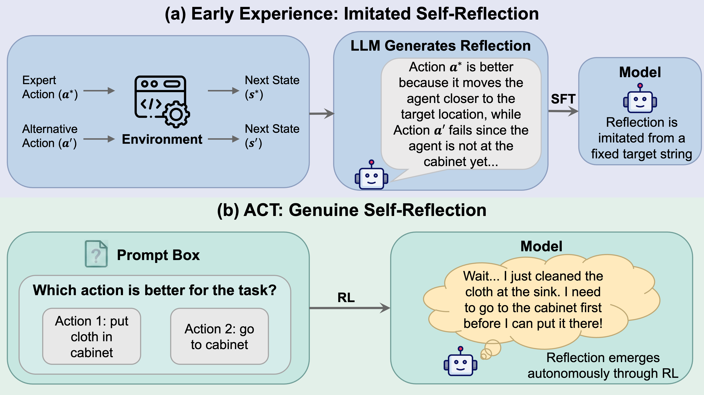
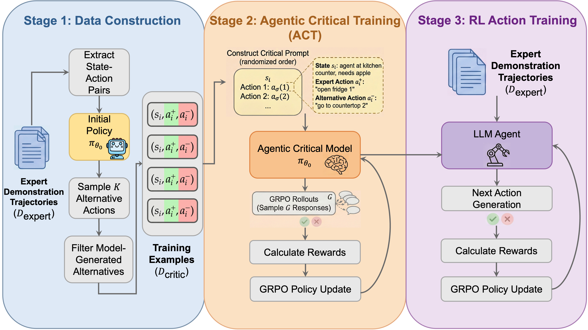
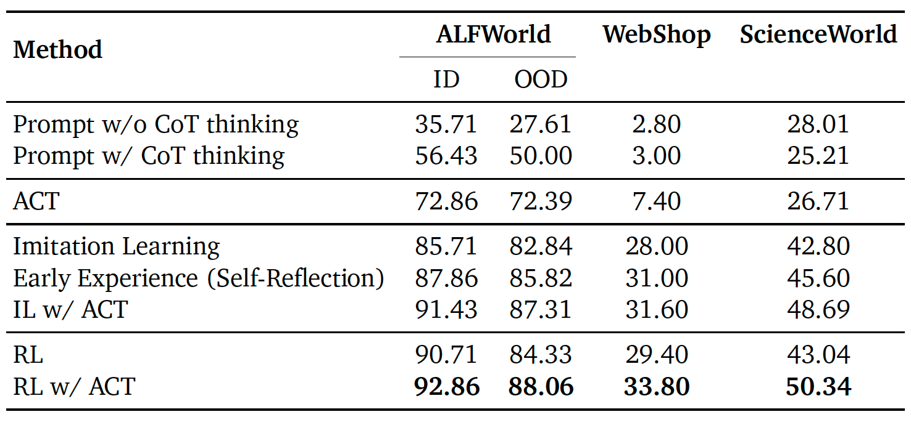
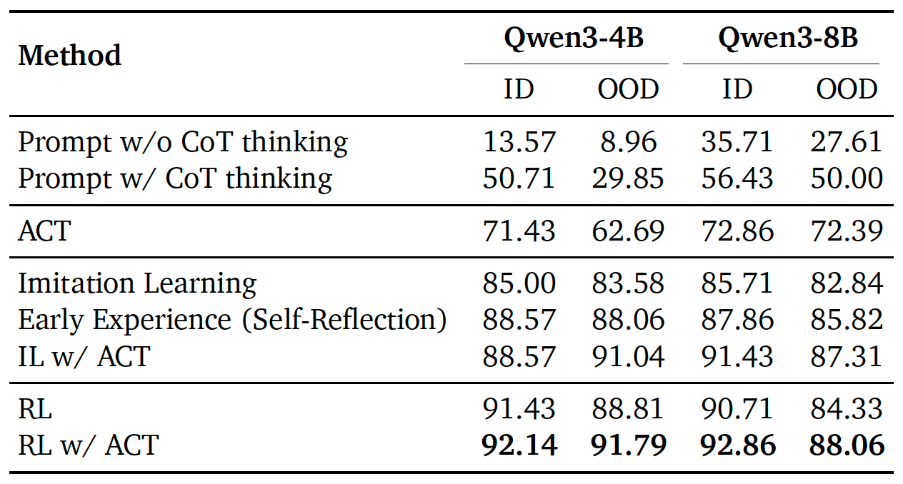
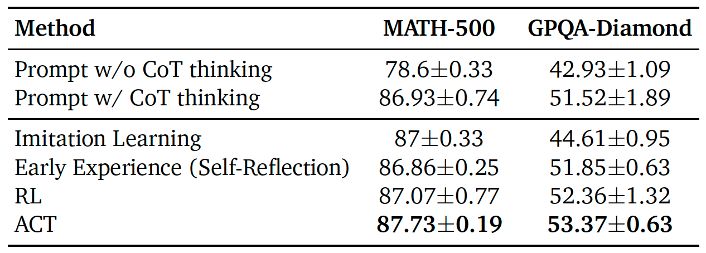
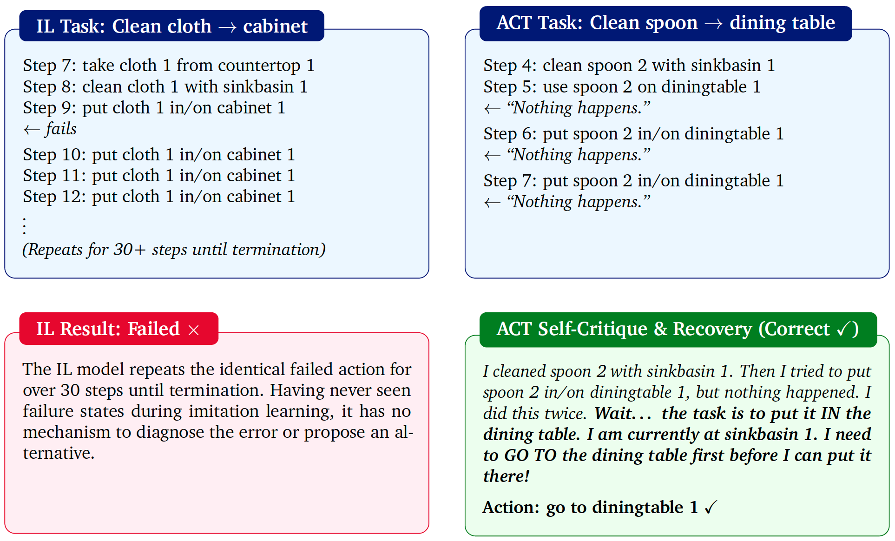
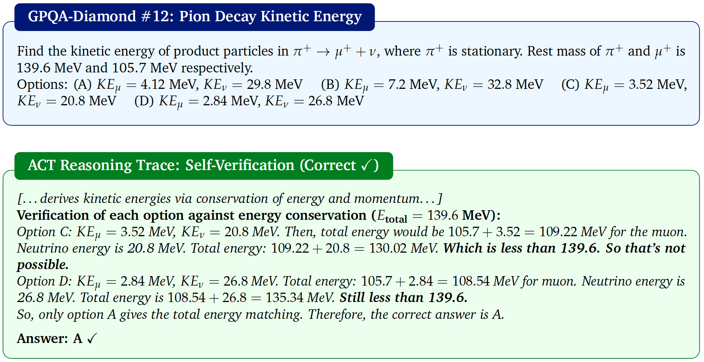

Agentic Critical Training
Abstract
Training large language models (LLMs) as autonomous agents often begins with imitation learning, but it only teaches agents what to do without understanding why: agents never contrast successful actions against suboptimal alternatives and thus lack awareness of action quality. Recent approaches attempt to address this by introducing self-reflection supervision derived from contrasts between expert and alternative actions. However, the training paradigm fundamentally remains imitation learning: the model imitates pre-constructed reflection text rather than learning to reason autonomously. We propose Agentic Critical Training (ACT), a reinforcement learning paradigm that trains agents to identify the better action among alternatives. By rewarding whether the model's judgment is correct, ACT drives the model to autonomously develop reasoning about action quality, producing genuine self-reflection rather than imitating it. Across three challenging agent benchmarks, ACT consistently improves agent performance when combined with different post-training methods. It achieves an average improvement of 5.07 points over imitation learning and 4.62 points over reinforcement learning. Compared to approaches that inject reflection capability through knowledge distillation, ACT also demonstrates clear advantages, yielding an average improvement of 2.42 points. Moreover, ACT enables strong out-of-distribution generalization on agentic benchmarks and improves performance on general reasoning benchmarks without any reasoning-specific training data, highlighting the value of our method. These results suggest that ACT is a promising path toward developing more reflective and capable LLM agents.
Motivation

(a) Early Experience imitates pre-constructed reflection text via SFT. (b) ACT uses RL to train agents that autonomously develop genuine self-reflection through verifiable rewards.
The ACT Pipeline

Overview of the ACT + RL training pipeline.
Stage 1: Data Construction. Stage 2: Agentic Critical Training. Stage 3: RL Action Training.
ACT transforms the learning objective from "imitate the expert action" to "identify the better action," requiring the model to develop discriminative understanding of action quality. The training pipeline consists of three stages:
Stage 1 (Data Construction): Given expert demonstration trajectories, we extract state-action pairs and sample alternative actions from the initial policy at each state. Expert actions are paired with model-generated alternatives to construct contrastive training examples.
Stage 2 (Agentic Critical Training): The model is trained via GRPO to identify the better action among two candidates presented in randomized order. Crucially, because ACT is trained through RL rather than imitation learning, the model must autonomously discover chain-of-thought reasoning that causally leads to correct action selection. The model is rewarded only for selecting correctly, and must therefore learn to reason about action quality on its own.
Stage 3 (RL Action Training): The ACT-enhanced model is further trained with GRPO for direct action generation on the expert trajectories, leveraging its improved critical reasoning foundation to achieve higher task success rates.
Main Results
We evaluate ACT on three diverse benchmarks: ALFWorld (embodied household tasks), WebShop (web-based shopping), and ScienceWorld (scientific reasoning). All methods are trained on exactly the same expert trajectories.

Main results on Qwen3-8B (%). ALFWorld and WebShop report success rates; ScienceWorld reports next-action prediction accuracy.
Key findings:
- ACT provides positive transfer: Adding ACT yields an average improvement of 5.07pp over IL and 4.62pp over RL. RL w/ ACT achieves the best overall performance.
- ACT outperforms Early Experience: IL w/ ACT outperforms Early Experience by 2.42pp on average, suggesting that RL-driven genuine self-reflection is more effective than imitating pre-generated reflection text.
- ACT improves OOD generalization: ACT's gain on OOD tasks (3.73pp) is larger than on ID tasks (2.15pp), indicating the reasoning generalizes to unseen configurations.
Cross-Size Data Transferability
We investigate whether ACT data collected from one model size can transfer to another. We train Qwen3-4B on ALFWorld using ACT data collected entirely from Qwen3-8B, without any re-collection or adaptation.

Cross-size results on ALFWorld with in-distribution (ID) and out-of-distribution (OOD) success rates (%).
The transferred ACT data remains effective: all ACT-augmented methods improve over their non-ACT counterparts on both ID and OOD tasks for Qwen3-4B. This validates that ACT's benefits generalize across model sizes and that the data collection cost can be amortized by reusing data across models.
Generalization to General Reasoning
We evaluate whether the critical reasoning acquired through ACT transfers to general reasoning benchmarks. Models trained on ALFWorld agentic data are directly evaluated on MATH-500 and GPQA-Diamond—without any mathematical or scientific reasoning training data.

Accuracy (%) with standard deviation across 3 runs. All trained models are learned solely from ALFWorld agentic data.
IL causes "reasoning collapse": On GPQA-Diamond, IL degrades performance by 6.91pp compared to the CoT prompting baseline (44.61% vs. 51.52%). In contrast, ACT achieves the highest scores on both benchmarks despite being trained exclusively on agentic data, improving GPQA-Diamond by 1.85pp over the baseline. This suggests that agentic RL environments, when combined with the ACT objective, can serve as a viable pathway for enhancing general reasoning capabilities.
Case Studies
Failure Recovery on ALFWorld
The IL model enters an infinite loop, repeating a failed action for over 30 steps. The ACT model encounters the same type of failure but uses its internal reasoning to diagnose the root cause and issue the correct command.

Left: The IL model repeats a failed action indefinitely. Right: The ACT model diagnoses the root cause and recovers.
Self-Verification on GPQA-Diamond
ACT exhibits self-verification behavior: after performing an initial derivation, the model checks its answer by substituting back into the original equations, systematically eliminating incorrect options.

ACT verifies each answer option against energy conservation, systematically eliminating inconsistent choices.
Reference
If you find our paper useful, please cite our paper:
@article{liu2026agentic,
title={Agentic Critical Training},
author={Liu, Weize and Liu, Minghui and Ho, Sy-Tuyen and Chakraborty, Souradip and Wang, Xiyao and Huang, Furong},
journal={arXiv preprint arXiv:2603.08706},
year={2026}
}